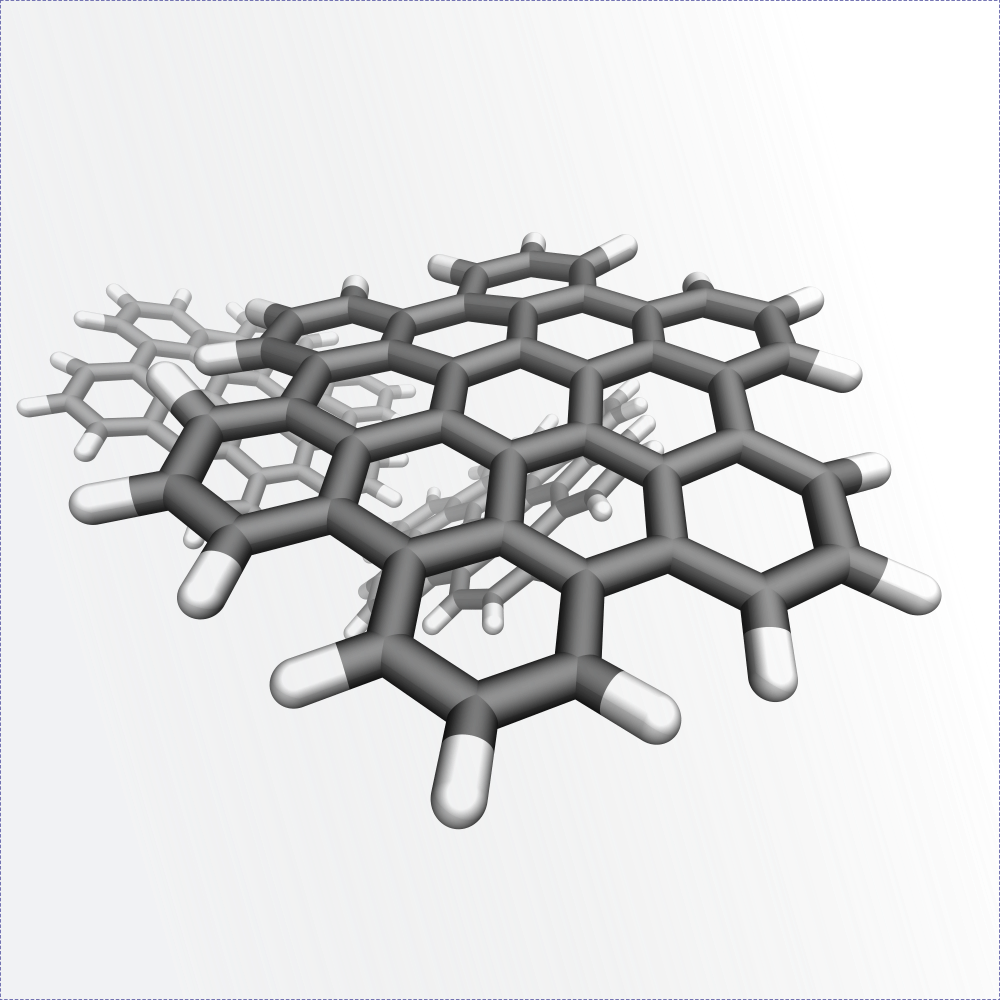
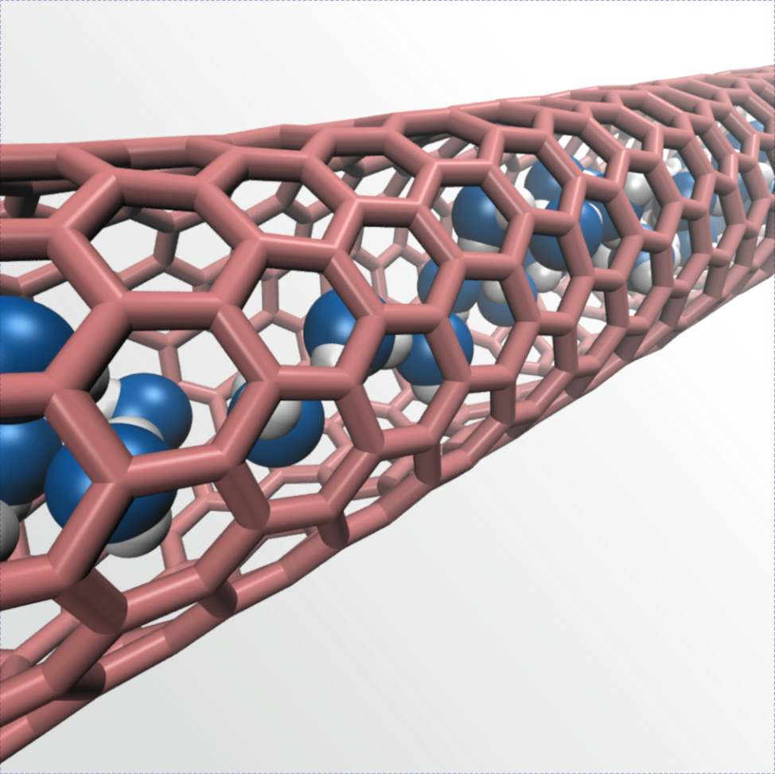
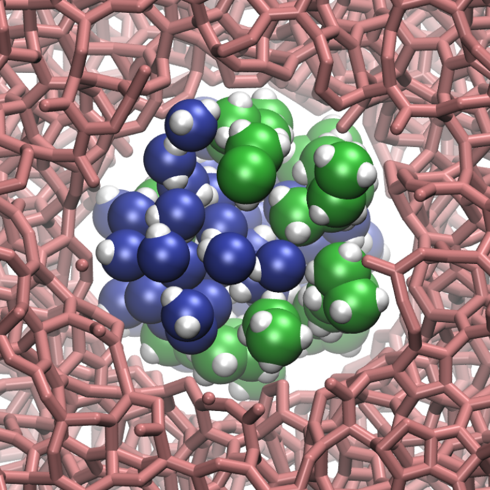

2D materials in flow
We combine molecular dynamics and continuum calculations to explore the influence of surface properties on the dynamics of 2D materials in flow. In particular, we showed that the large hydrodynamics slip as the surface of graphene platelet lead to unexpected dynamics. See our article in Nature Comm., or the one in J. Chem. Phys.

Mimicking a desert plant
Using experiments and multiscale simulations, we showed that the ability of the rootless desert plant Tillandsia to absorb liquid water while also preventing its evaporation during drought results from clever juxtaposition of material within its epidermis. See our article in Nature Comm., or the one in J. Chem. Phys.

Subcontinuum flow
Using molecular simulations, we model the transport of water subnanometric nanopores and challenge the validity of continuum predictions. In particular, we showed that nanoconfinement leads to an unexpected hydrophilic-hydrophobic transition in carbon nanotubes. See our article in PRE.

Electrohydrodynamics
We showed that the low-frequency pink noise commonly measured in nanopores takes its origin in the reversible adsorption of ions at the pore surface combined with the excursions of the ions in the reservoirs. In another study, we showed the possibility of water flow rectification using a diode nanofluidics. See our article in Nano Letters, and the one in PRL.

Water alcohol separation
Using molecular dynamics, we showed the possibility of separating water and small alcohol using nanoporous carbon membrane. See our article in J. Chem. Phys.

The shape of aquaporins
Our results show that a nanopore with conical entrances and suitable opening angles provides increased hydrodynamic permeability. Strikingly, optimal opening angles as predicted by our model compare well with the angles measured in a large variety of aquaporins. See our article in PNAS, or the one in J. Chem. Phys.